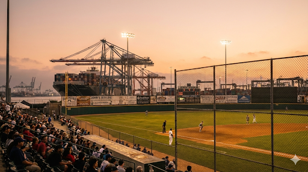
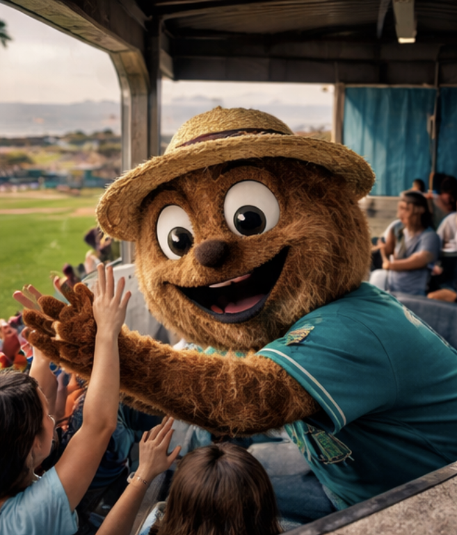
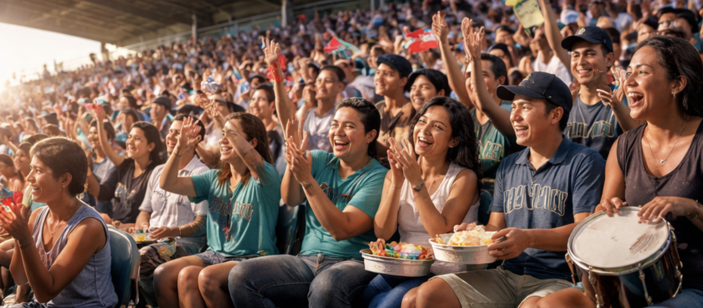

San Pedro Cocolos
Americas DivisionThe Club
The Cocolos don’t explain themselves. You feel them first — the drums, the timing, the way a routine fly ball becomes a small public event.
San Pedro is port air and bright paint and people who know each other. The club belongs to that. Festive, yes — but not soft.
- Tradition: “La Moneda”
- Stands: “El Malecón”
- Local Rule: “No Quiet Innings”
Ballpark

El Malecón Park. A brick-and-concrete bowl with open corners that let the wind in. The lights come on early. The crowd doesn’t wait.
Broadcast & Announcers
Marcos “Mar” Tejada
Broadcast. Steady, local, precise — like tide charts. Calls the game like it matters, without acting like it’s the end of the world.
Lidia Santos
In-Game Announcer. The voice inside the park. Lineups, calls, promos — delivered like she’s conducting a neighborhood block party.
Mascot & Stands

Coco
A human-worn costume with seams, scuffs, and history. Coco lives on the rail: high-fives, photos, kids reaching up, constant motion.

El Malecón
Families, aunties, teenagers, dock workers, kids with ice cream. Drums and claps and coins on strings. The noise isn’t a gimmick — it’s the baseline.